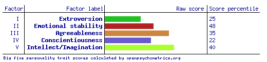
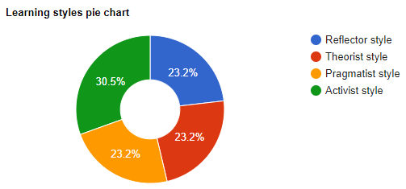

Name: Connor Jack O’Loughlin
Student ID: s3949499
Student email: s3949499@student.rmit.edu.au
Personal Profile
Myers-Briggs Test
Result: INFP-T
What does this test result mean for me?
As per the test results this means that I now have a broad idea of what my strengths and weaknesses are and I can base some decisions on strengths and weaknesses I personally relate to. For strengths, I relate to the Generous, open-minded and idealistic aspects of the Mediator personality type as my way of thinking tends to conform to these “strengths”. As for weaknesses I also relate to the Unrealistic, Self Critical and unfocused part of this personality type as, same as the strengths these weaknesses tend to line up with situations I find myself in and the way I tend to reach way too high for things I need to achieve in a limited timespan (like the project idea).
How may this influence my behavior in a team?
This may influence the way in a team as the “open-minded” and “idealistic” strengths will allow me to have a greater capacity to compromise on project ideas and general team things that some others wouldn’t be able to. Additionally because of my tendency to be “unfocused” may cause me to rely on my group members as motivation to stay on task at all times as in general unfocused atmospheres tend to make me less motivated to be able to get what needs to be done finished.
How should this be taken into account when forming a team?
This will affect how I think of team composition as I am not exactly suited to being the team leader. As such I should try to form a team with team members who are more motivated and driven so that I may also work off of them and also be motivated and driven. I also don’t need to worry as much when it comes to someone who really wants to do their idea as I am ready to compromise regardless of what their idea is. Therefore I am the ideal candidate for someone who has a complete mindset of what they want to do and a vision in mind as I would try my best to try and support them the best I can.
Big 5" Personality test

What does this test mean for me?
What does this test mean for me?
As I scored lower in Extroversion this means that I am more introverted which likely makes me typically less sociable than others. As I scored about in the middle of emotional stability I like to believe that this puts me at about average? Hopefully? My high score in agreeableness also lines up with the results of the myers-briggs test making me more able to compromise and be considerate of others. My lower scored conscientiousness lines up with my more sporadic and unplanned nature. Finally my high score in Intellect/Imagination means that I may be able to be more creative and less conventional than some others.
How may this influence my behavior in a team?
Overall these results mean that although I can be agreeable and creative I may face issues in speaking up when it comes to my own ideas due to my introversion. Other than that I don’t think this will influence much of my behaviour in a team except for maybe emotional stability which seems high enough to not exactly be an issue.
How should this be taken into account when forming a team?
When forming a team this will influence me to try and find more extroverted people to hopefully be able to bring me up enough to be able to talk about what I want to talk about and be able to express my ideas without me having my introversion get in the way. Other than that I just hope to be with people who are also agreeable so there isn’t too many conflicts and disputes on what may happen in regards to the project.
"Learning Styles" test
What does this test mean for me
As I scored the highest in the “activist style” I am more suited to learning styles that tend to be more in the moment, these include learning methods such as brainstorming, group discussions and problem setting. Additionally, the Learning Styles website recommends you use other learning styles as well. As my second highest learning style is the “Pragmatist Style” I may also be suited to learning through practicals, case studies, problem setting (similar to the activist style) and discussions. Both these styles line up to make problem setting and discussions suitable ways of trying to learn.
How may this influence my behavior in a team?
This may affect my behaviour in a team as I may want to seek out more conversions that are more discussion based involving frequent back and forth when it comes to learning new concepts from team members and hopefully allowing me to more quickly learn concepts and techniques that they have knowledge of.
How should this be taken into account when forming a team?
As this is the case I should try and find group members who are more open to sharing their knowledge and open to conversations so that I may learn from them. Otherwise this information is not really suitable to be applied to a group as everyone likely has their own learning styles that are different to mine and would require a lot of management to satisfy all our needs.